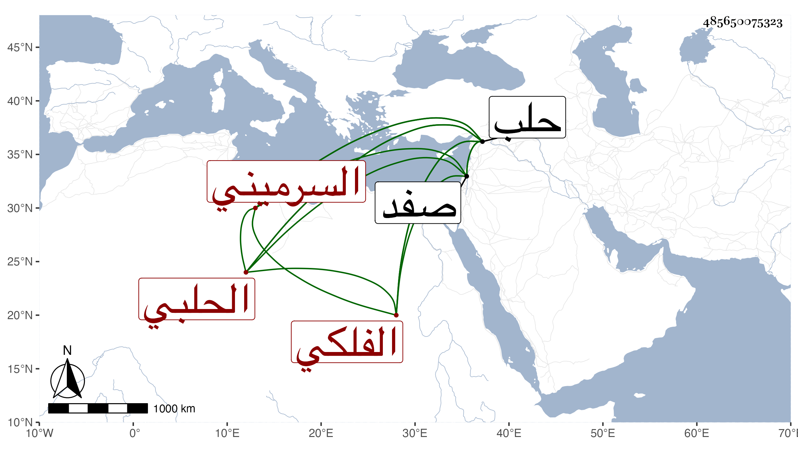

0902Sakhawi.DawLamic.ITO20230111-ara1.EIS1600.485650075323
Biography ID: 485650075323
أحمد بن إبراهيم بن ملاعب شهاب الدين السرميني ثم الحلبي الفلكي ويعرف بابن ملاعب وكان أستاذا ماهرا في علم الهيئة وحل الزيج وعمل التقاويم مبرزا فيه انفرد بذلك بحلب في وقته بحيث كانوا يأخذون تقاويمه إلى البلاد النائية ويرسلون في طلبها ولذا كانت سائر نوابها تقربه مع نسبته لرقة الدين وانحلال العقيدة وترك الصلاة وشرب الخمر بحيث لم يكن عليه أنس الدين تحول من حلب خوفا من بعض الأمراء إلى صفد فسكنها وكانت منيته بها في سنة أربع وعشرين وقد جاز الثمانين ، ذكره ابن خطيب الناصرية مطولا وقال أنه اجتمع به مرارا وحكى أنه قال لبعض الأمراء ممن سماه في محاربة لا تركب الآن فليس هذا الوقت بجيد لك فخالفه وركب فقتل ، في حكايات نحو ذلك وقعت له فيها إصابات كثيرة يحفظها الحلبيون قال وسمعته مرارا يقول هذا الذي أقوله ظن وتجربة ولا قطع فيه ، قال شيخنا في أنبائه وسمعت القاضي ناصر الدين بن البارزي يبالغ في إطرائه .
